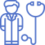
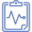

Дистанционное обучение: “Предрейсовые и послерейсовые медицинские осмотры водителей автотранспортных средств”
Оставляйте заявку!
Что это?
Медицинский сотрудник, проводящий предрейсовый медицинский осмотр, обязан иметь действующий сертификат о прохождении специального курса обучения. Это касается как медиков, работающих
в сторонних специализированных организациях на основе договора, так и штатных специалистов. Обучение может происходить как очно, так и заочно, с помощью дистанционных технологий,
по утвержденной программе Министерством здравоохранения.
Для чего это необходимо?
Данная программа направлена на:
Получение знаний и навыков по методике проведения предрейсовых, послерейсовых, предсменных, послесменных медицинских осмотров, знаний и навыков ведения учетных форм медицинской (и другой) документации для соблюдения требований законодательства
Получение знаний и навыков выполнения профилактических мер предупреждения дорожно-транспортных происшествий, производственного травматизма
Совершенствование имеющихся компетенций, необходимых для профессиональной деятельности, и повышение профессионального уровня в рамках имеющейся квалификации специалиста
Что включает курс?
Содержание программы построено в соответствии с модульным принципом.
В дистанционном формате обучение включает подготовку по алгоритмам проведения осмотра
и снабжен практическими работами, при создании которых использовался диалоговый тренажер
и моделировались реальные ситуации.
Специалисты, успешно освоившие дополнительную профессиональную программу повышения квалификации подтверждают:

Готовность к самостоятельной профессиональной деятельности
по организации и проведению предрейсовых, послерейсовых, предсменных, послесменных медицинских осмотров, включая применение дистанционных телемедицинских технологий
Освоение алгоритмов работы по организации кабинета и рабочего пространства в соответствии с порядком оснащения, ведению
и заполнению учетно-отчетной медицинской (и другой) документации

проведению медицинских осмотров разным категориям работников, знания и навыки определять основные клинические симптомы, подтверждающие употребление алкоголя и его суррогатов, наркотических веществ, одурманивающих веществ, использовать медицинское оборудования и изделия медицинского назначения; знания и навыки оказать в полном объеме медицинскую помощь,
в том числе при неотложных состояниях; освоение знаний и навыков по профилактике производственного травматизма и дорожно- транспортных происшествий
Штрафы (если есть)
100 - 200 тыс. ₽
Для коммерческих медучреждений (ч.4 ст.14.1 КоАП РФ)
170 - 250 тыс. ₽
Для государственных медучреждений (ч.3 ст.19.20 КоАП РФ) и от 170 до 250 тыс. рублей + приостановка деятельности на 90 дней
Что касается врачей - если вина врача будет установлена, а именно специалист проигнорировал указание руководства о необходимости пройти курсы повышения квалификации, то работодатель может применить следующие меры воздействия:
отстранение от работы на срок до 2-х месяцев
перевод на другую должность, не требующую специального права (сертификация /аккредитация)
прекращение трудовых отношений
Преимущества
По окончании курса выдаем диплом государственного образца
Вносим сведения о дипломах в федеральную информационную систему “Федеральный реестр сведений документов об образовании и (или) о квалификации, документах об обучении”
Мы зарегистрированы на портале Непрерывного медицинского образования, начисляем баллы медицинским сотрудникам за прохождение обучения
Индивидуальный график обучения
ИДистанционное обучение без отрыва от основной работы
Работаем в соответствии с образовательной лицензией